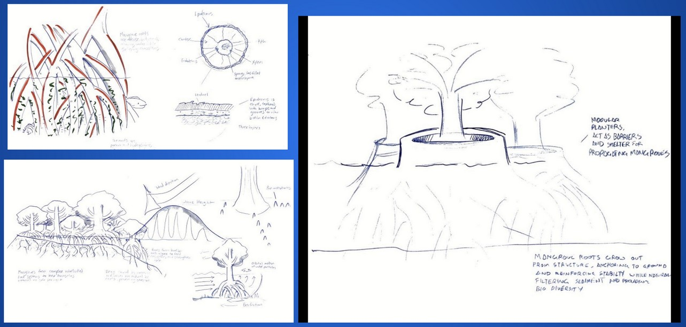
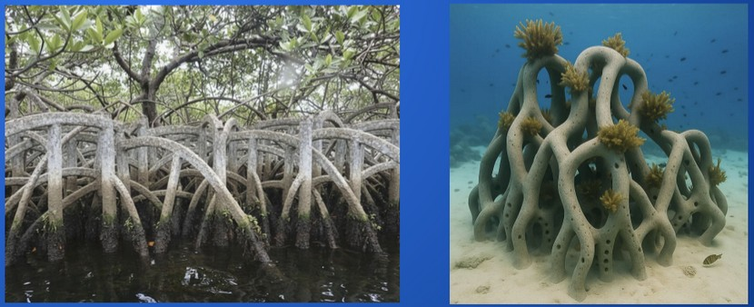
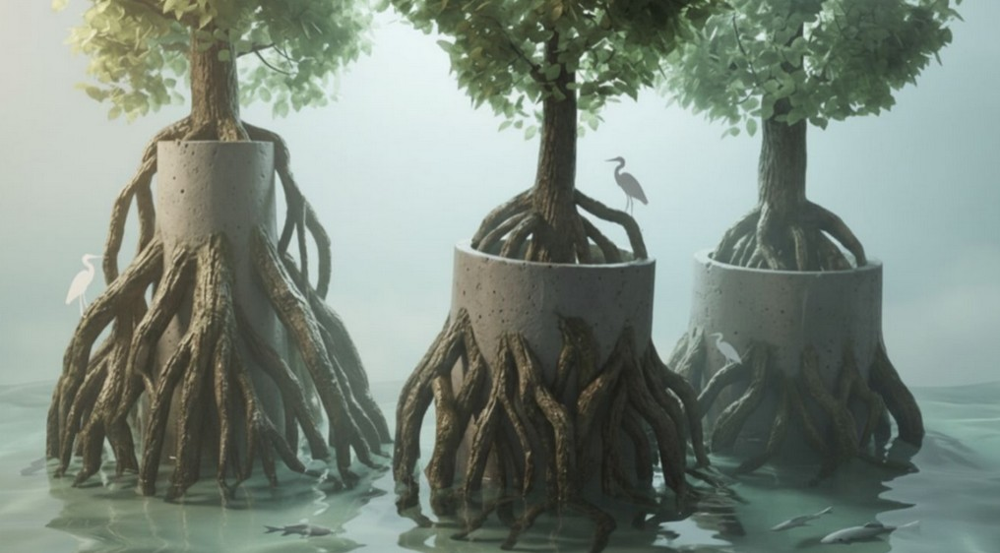

The problem
Coastal cities face accelerating threats from rising seas, stronger storms, and eroding shorelines. Traditional concrete seawalls offer temporary protection — but they block sediment flow, destroy marine habitats, and create reflective wave energy that worsens erosion over time. They solve one problem while creating several more.
Growing up in Miami, this felt personal. Florida's coastlines are some of the most vulnerable in the country, and the relationship between built infrastructure and natural ecosystems is one industrial designers rarely engage with.
The biologized question
Rather than asking "how do we build a better wall," I reframed the question through a biomimicry lens: how does nature dissipate and absorb large forces while simultaneously creating stability and supporting life in coastal environments?
The answer was mangroves — specifically red mangroves, whose prop root systems perform wave attenuation, sediment trapping, and habitat provision simultaneously. Oyster reefs and coral colonies reinforced the principle: porous, branching geometry reduces wave force through interference rather than brute resistance.
Design solution
Bioroot is a modular concrete structure cast in the form of a mangrove root cluster. A hollow cylindrical center houses the structural core — a basalt-fiber rod reinforced with porous, self-healing bio-receptive concrete developed with reference to Dr. Ali Ghahremaninezhad's research at the University of Miami.
The outer root geometry branches downward into the seafloor, distributing lateral load while creating sheltered micro-habitats for fish, crustaceans, and invertebrates. A cellulose-based coating on the upper structure degrades naturally over 2–5 years, allowing mangrove propagules to take root and eventually replace or supplement the structure as the ecosystem matures.


Concept sketches and discovery-to-abstraction drawings translating mangrove geometry to structure.
Materials
Porous bio-receptive concrete — marine-grade mix engineered to support algae, coral, and microbial colonization. Surface micro-texture promotes biological growth rather than repelling it.
Basalt-fiber rod core — non-corrosive reinforcement that performs better than steel in marine environments without leaching harmful ions.
Cellulose coating — a biodegradable surface layer that protects the structure during installation, then breaks down to expose porous concrete surfaces and create substrate for mangrove root anchoring.
Real-world precedent
The Ciénaga de Mallorquín restoration in Barranquilla, Colombia validated the core thesis: modular, nature-aligned interventions can transform degraded coastal ecosystems. Once heavily polluted with dying wildlife, the ciénaga was restored through cleanup, mangrove reforestation, and managed water flow — now thriving with biodiversity and ecotourism. Bioroot attempts to provide the structural scaffolding that accelerates this kind of transition.
